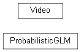

bayesian_linear_regeression Module¶
Functions¶
|
|
|
Plot reference, prediction, uncertainty estimate, and sampled data. |
Classes¶
Class for initialization, inference of parameters, predication, and perstistence of probabilistic General Linear Model (GLM) for solving regression problems. |
|
|
Class for making and saving of the video. |
Class Inheritance Diagram¶
